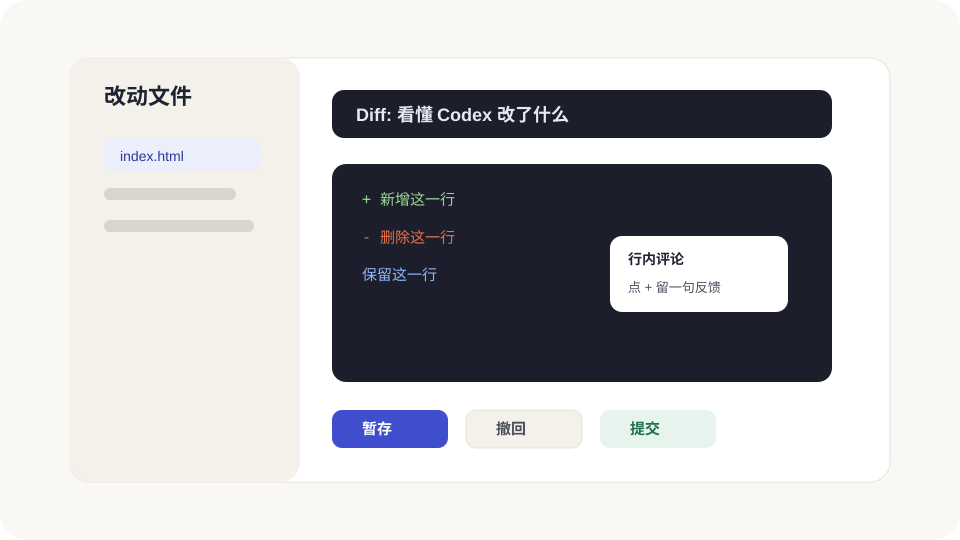

看改动、跑命令和保存
Codex 改完文件后,你最重要的工作不是“相信它”,而是“看懂大方向”。Review 面板、内置终端和 Git 按钮,就是帮你把这件事做得不吓人。

Diff:绿色是新增,红色是删除
Diff 就是“修改前后对照表”。你不需要看懂每一行代码,先看三件事:
- 改的是不是你刚才要求的文件。
- 有没有明显删除一大块你不想删的内容。
- 有没有新增奇怪链接、账号、密钥或和任务无关的东西。
如果你看不懂,可以直接问:
Review 面板到底在看哪一段改动
Review 面板不是只显示 Codex 刚刚改的东西,它看的是 Git 里的改动状态。所以你可能会看到三类变化:
- Codex 刚改的文件。
- 你自己手动改过但还没提交的文件。
- 其他工具生成但 Git 还没保存的文件。
如果你只想看 Codex 最近一轮做了什么,可以切到类似 Last turn changes 的范围;如果你想看整个分支相对主分支变了什么,就看 All branch changes。名字可能随版本略变,但思路就是“看最近一轮、看未提交、看整个分支”。
行内评论:比“这里不对”更准确
Review 面板里可以对某一行留评论。比如你看到一段标题文案不喜欢,不要在聊天里说“那个标题改一下”,而是直接在那一行评论:
这里太像广告了,请改得更像教程口吻,不要夸张。
留完评论后,再回到线程里说:“请处理我刚才留的行内评论,范围尽量小。” Codex 就知道该盯哪一行。
行内评论的完整流程
- 打开 Review 面板,找到你不满意的文件。
- 把 diff 展开,移动到具体行。
- 点行旁边的加号或评论入口。
- 写清楚“哪里不对”和“希望怎么改”。
- 回到线程,说:“请处理我刚才留的行内评论,不要顺手重构。”
- 改完后再看同一行 diff,确认问题解决。
这套流程特别适合改文案、样式、局部 bug。你越具体,Codex 越容易一次改准。
暂存、撤回和提交
| 按钮/动作 | 通俗理解 | 什么时候用 |
|---|---|---|
| Stage / 暂存 | 这块改动我准备留下 | 你检查过,觉得没问题。 |
| Revert / 撤回 | 这块不要了,恢复到改之前 | 改偏了、删多了、看着不放心。 |
| Commit / 提交 | 给当前成果存一个正式保存点 | 一小阶段完成后立刻做。 |
| Push / 推送 | 把保存点同步到 GitHub | 你想备份或准备部署时。 |
| Pull Request | 把一组改动交给别人审 | 团队协作或上线前走流程时。 |
为什么同一个文件会出现两次
如果你看到同一个文件在 Staged 和 Unstaged 两边都出现,别慌。这是 Git 的正常状态:同一个文件里,有些改动你已经暂存了,有些改动还没暂存。
小白可以这样理解:
- Staged:已经放进“准备提交的篮子”。
- Unstaged:还在桌面上,没放进篮子。
提交前,你可以让 Codex 帮你解释 staged 和 unstaged 各是什么,再决定要不要一起提交。
内置终端:让 Codex 和你看同一个错误
内置终端可以跑命令。你可以用它启动预览、跑测试、看报错。更重要的是:Codex 可以读到终端输出。
比如你启动网站失败,不要截图猜原因,直接说:
处理 Pull Request 评论
如果你的项目接了 GitHub,并且你在一个 PR 分支上工作,App 可能会把 PR 评论和上下文也放进 Review 体验里。你可以直接让 Codex 处理具体评论:
如果 PR 信息没出现,常见原因是 GitHub CLI 没安装或没登录。你可以让 Codex 检查 gh 是否可用,但登录授权这一步通常需要你自己确认。
本地环境和快捷动作
如果一个命令你经常用,比如“启动网站预览”或“跑测试”,可以把它配置成 App 顶部的快捷动作。以后你不用每次敲命令,点一下就行。
对新手来说,最值得配置的动作通常是:
- Start:启动本地预览。
- Test:运行测试或检查。
- Build:确认项目能不能打包上线。
保存前的 5 项检查
- Review 面板里没有不认识的大改动。
- 终端里最小检查跑过,比如预览、测试或构建。
- 浏览器里看过关键页面。
- 提交信息能说明这次做了什么。
- 如果要 push 或发 PR,确认没有密钥、账号、临时文件被提交。
这 5 项看起来啰嗦,但它们能救你很多次。尤其是“不要把密钥提交上去”,要形成肌肉记忆。
如果项目还不是 Git 仓库
Review 面板依赖 Git。如果你的文件夹还不是 Git 仓库,App 可能会提示你创建。你可以让 Codex 帮你做,但先让它解释:
- 让 Codex 对某个小文件做一处文案修改。
- 打开 Review 面板,找到对应 diff。
- 让 Codex 用人话解释这次 diff。
- 不提交,直接撤回这次改动。